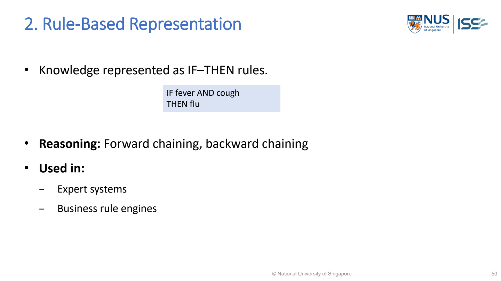

Forward chaining（前向推理；由資料推向結論）
Forward chaining starts with known facts（事實；推理中已知的資訊） and repeatedly applies satisfied IF–THEN rules to derive more facts. It is data-driven（資料驅動；由已知資料出發）.
Rule2 derives fever; rule3 then derives suspected infection; rule1 can then fire.
Lecture example redrawn · MR-Day 2_JR_v1.pdf · PDF p.18, 19, 20, 21, 22

MR-Day 2_JR_v1.pdf · PDF p.49 / printed slide 50. Original supplied slide, not redrawn.
What to draw / write: Rule-based representation
IF fever AND cough THEN flu
- IF
- Antecedent: conditions to check.
- AND
- Both conditions must hold.
- THEN
- Consequent: fact/conclusion to infer.
Exam answer: Write each condition and its value, the connector (AND/OR), and the conclusion. Show the facts that trigger the rule. This is the lecture’s syntax example, not a sufficient diagnostic rule.
MR-Day 2_JR_v1.pdf · PDF p.49
Lecture forward-chaining chain
Worked study example: Toy lecture facts: temperature（溫度） 104°F, illness for two months and sore throat. These are lecture rule illustrations, not clinical advice.
| Cycle（循環；路徑返回已到過的狀態） | Matched rule | New fact | Why now possible |
|---|---|---|---|
| 1 | Temperature above 100°F → fever | Fever | Measured temperature known |
| 2 | Long illness AND fever → suspected infection | Suspected infection | Fever was derived in cycle 1 |
| 3 | Sore throat AND suspected infection → strep conclusion（結論） | Toy strep conclusion | Both conditions now available |
| 4 | No further new facts | Stop | No productive new inference（推論；由依據得出結論） |
What this tells us: The conclusion is explained by the whole dependency chain. Jumping directly from temperature to strep omits two required rules and makes the answer impossible to audit.
How do new facts trigger a chain of rules?
- Forward chaining grows a set of conclusions from the facts already available. Newly derived facts are not merely displayed: they become usable conditions for later rules. That intermediate working memory（工作記憶；當前處理的資訊） is why the engine can produce a multi-step conclusion instead of running unrelated one-off tests.
- The rule matcher identifies rules whose full conditions currently hold. If more than one rule matches, a documented conflict policy（策略） determines which fires next. After firing, matching is repeated because the available facts changed. Detecting unchanged/refired conclusions prevents loops that add no information.
- In the agreed A-EYE-Web study design, one engine can process diagnostic, triage（分流；判斷處理或轉介的急切程度） and action rule groups. Those responsibilities can have different conclusion fields without needing three neural networks（神經網路）. Patient observations（觀測值）, disease frames（框架；附欄位的知識記錄）, rule records and result records remain distinct data structures.
Implementation steps and their purpose
- Store current facts in working memory.
- Match rule conditions to these facts.
- Choose a rule if several can fire.
- Add its new conclusions.
- Repeat until no new facts arise or the required result is reached.
Choose the method from the problem
Useful when incoming observations should trigger all relevant（相關性；是否切合問題） conclusions, such as diagnosis（診斷；判斷可能的疾病或故障原因）, warning and action rules.
| Scenario cue | Suitable choice | Why it fits |
|---|---|---|
| Many incoming findings should trigger relevant outputs | Forward chaining | Starts from known data and propagates consequences |
| Only one specific hypothesis（假設；待驗證的解釋） needs checking | Consider backward chaining（反向推理；由目標追查條件） | Goal-directed work may avoid irrelevant consequences |
Diagnose: Engine loops without progress
| What you observe | Why it happens | What to change | Why that helps |
|---|---|---|---|
| Engine loops without progress | Same facts repeatedly added | Track fired activations/new facts | Only changed knowledge should drive further inference |
| Separate outputs assumed to require separate models | Responsibility confused with implementation | Use typed rules and one coherent engine | One procedure can derive several conclusion types |
Common wrong answers and the exact correction
- The engine performs inference; the KB（Knowledge Base；知識庫；供推理查用的知識） stores rules.
- Separate diagnosis/triage outputs do not require separate trained models.
Implement it and test the outcome
Data, components and application
- Many irrelevant rules → index conditions or restrict scope → reduce unnecessary matching.
- Rule loops → avoid refiring unchanged facts → prevent endless repetition.
How to evaluate it
Trace derived facts and rule IDs. Test missing data, conflicts and termination; expert-supplied clinical rules require validation.
Build the answer in this order
- List initial facts.
- Show rule firing order.
- Add intermediate facts.
- Return outputs and reasons.
An answer you could write
- Temperature104°F triggers the toy fever rule; fever plus two-month illness derives suspected infection; that plus sore throat enables the toy strep conclusion.
- The engine repeatedly matches and fires rules, storing intermediate facts; patient frames and typed diagnostic/triage/action rules do not require a separate model for each output.
Where this is tested in the sample papers
ISY5001 Q2(d) — Knowledge-based internal architecture（架構） and data structures
What the question requires
- Validate inputs; distinguish present, absent and unknown.
- Store patient facts in working memory.
- Represent specialist knowledge as disease frames and diagnostic/triage/action rules.
- Match/fire rules; display conclusions and explanations.
Proposed answer points
- Patient facts → inference engine（推理引擎；套用知識得結論） ← knowledge base → diagnosis candidates + urgency + action.
- Show structures: patient fact fields; disease frame IDs; rules with conditions, conclusions, priority and explanation. One engine can apply several rule types.
- If evidence（證據；已觀察到的資訊） is missing/conflicting, request information or flag for doctor review. Clinical contents require specialist validation.
Avoid: A box labelled “AI（Artificial Intelligence；人工智慧）” is insufficient. A KB stores knowledge; an inference engine names the procedure using it. Softmax（機率正規化；轉成總和為1的權重） scores do not automatically encode urgency.
Full question-to-concept map →Used Cases:
The use-case names come from the lecture. The short scenarios below explain how to recognize them in an exam; they are teaching examples, not quoted exam questions.
| Lecture use case | What it means | Example / clue in a question |
|---|---|---|
| Expert systems（專家系統） | Encode a specialist’s conditions and conclusions as rules. | An adviser checks the supplied observations against expert IF–THEN criteria and explains which rule fired. |
| Business rule engines（商業規則引擎） | Apply explicit organizational policies to current records. | If an order meets the stated membership and spending conditions, apply the specified discount; show the conditions and result. |
Choose by the required job: explain what knowledge is stored and how this representation helps with the scenario. A use-case name alone is not a sufficient reason.
MR-Day 2_JR_v1.pdf · PDF p.49 / printed slide 50.